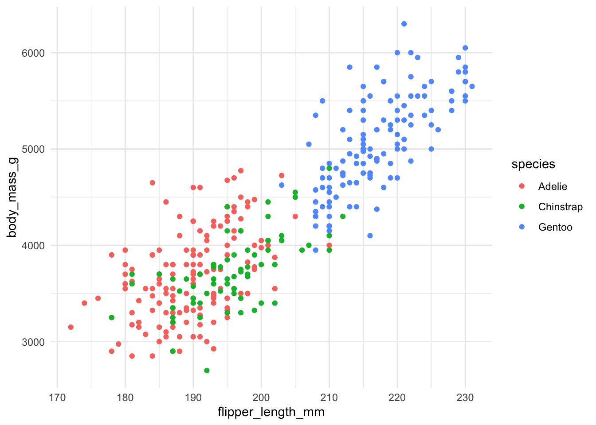

```{r}
print("Hello world!")
```3 Reproducible Research and Project Management
Objectives
- Know the principles of reproducibility and literate programming, and how they can be realised in
Rusing Quarto. - Know how to collaborate and track your code using
git.
3.1 Introduction
Reproducibility is at the heart of credible scientific computing. Yet, it’s increasingly common to find projects where no one, not even the original author, can recreate past results. Code is scattered, data is missing, and assumptions live only in someone’s head. This undermines the foundations of science. In response to these issues, two powerful ideas have emerged: literate programming and version control.
Literate programming encourages us to weave narrative and code together — to treat analysis as a story told with data. Quarto, the modern successor to R Markdown, provides a seamless way to do this that supports R and many other languages.
Meanwhile, Git gives us a robust system for tracking changes, collaborating with others, and safeguarding our work. With Git, we can see the evolution of a project, roll back mistakes, and work in parallel as a team.
As said in (Buckheit and Donoho 1995) (regarding research papers about computational results):
… these documents are not the research [rather] these documents are the “advertising.” The research is the “full software environment, code, and data that produced the results”
3.2 Reproducibility and Literate Programming in R with Quarto
We have already seen some Quarto documents, but up until now we have treated it as just a way to run R code. We will now give a brief, more formal introduction to Quarto. More information is available in the Quarto guide.
3.2.1 Reproducibility and Literate Programming
Reproducibility means that someone else (or even your future self) can take your code, data, and documentation, and obtain the same results you did. This is essential for scientific integrity and for building on previous work. In practice, reproducibility requires:
- All code and data are available and clearly organized.
- The computational environment (software versions, dependencies) is documented.
- The process to generate results is automated and documented.
Literate programming is a methodology introduced by Donald Knuth (Knuth 1992), where code and narrative are woven together in a single document. The idea is to write programs that are understandable by humans first, and computers second. In practice, this means:
- Explanations, assumptions, and reasoning are written alongside code.
- The document can be “knitted” or “rendered” to produce a readable report, with code, output, and narrative together.
- Errors or changes in data/code are automatically reflected in the output, reducing manual mistakes.
Quarto (and previously R Markdown) are tools that enable literate programming in R and other languages. They allow you to combine markdown text, code chunks, and output in a single .qmd file. This approach ensures that your analysis is transparent, reproducible, and easier to share or update.
3.2.2 Anatomy of a Quarto Document
A Quarto document is a plain text document with the extension .qmd. It can start with a YAML Header followed by narrative text interspersed with code chunks.
3.2.2.1 Knitting
Fundamental to understanding Quarto is knowing what you can use it for. Quarto is intended to allow a user to write documents in the literate programming paradigm, in a way that is agnostic to the final output file format of the document. For example, these lecture notes are all written in Quarto, and it allows them to be compiled into HTML or PDF as you can find on the course Blackboard. There are a lot of other formats that Quarto can be compiled to, though! The process of taking the raw .qmd file and turning it into HTML or PDF is called “knitting”. In RStudio, knitting is accomplished by clicking the Render button.
3.2.2.2 YAML Header
YAML is an acronym for “Yet Another Markup Language” or “YAML Ain’t Markup Language”. It is intended to be a way of serialising data that is easily readable both by humans and machines. Giving a full specification of YAML is beyond the scope of this course, but those interested can find more information here.
A Quarto document does not need to include a YAML header, but it can be helpful to include metadata as part of the document. For example, a minimal YAML header might look like:
---
title: An Example Quarto Document
---The two --- lines are important; these tell Quarto that this is the YAML header, and everything between the --- is to be treated as YAML. In this case, the contents simply tells Quarto that the title of the document is “An Example Quarto Document”. When the document is knitted, the title can be used in various ways. For example, it can be placed into the <title> tags in a HTML document, or it can be used to generate a PDF table of contents.
The YAML header is also used to inform the knitting process. For example, this header tells Quarto that we would like to knit to HTML:
---
title: An Example Quarto Document
format: html
---The next one specifies that either HTML or PDF are options. For HTML, it says the theme and injects some custom styles. For PDF it specifies the documentclass and injects a custom preamble.
---
title: An Example Quarto Document
format:
html:
theme: cosmo
css: styles.css
pdf:
documentclass: scrreport
include-in-header: preamble.tex
---There are a great many other keys that can be included to customise the document. For this course, the following simple header will usually suffice (or, even, the default one generated by RStudio):
---
title: <Your Title Here>
format: html
---3.2.2.3 Narrative Text
After the YAML header, the rest of the text is markdown interspersed with code chunks. Markdown is a simple language that describes how text should be formatted when knitted / rendered. For example:
## An Amazing Title
This *text* is **even more** _amazing_ than the title. It can even include math! $\pi = 4$.Knits to:
Output
1.1 An Amazing Title
This text is even more amazing than the title. It can even include math! \(\pi = 4\).
A more complete description of Markdown can be found here.
3.2.2.4 Code Chunks
Code chunks in Quarto are indicated by using the ``` syntax, i.e.:
If we embed this in a Quarto document, we get the following output when knitted:
print("Hello world!")[1] "Hello world!"The ``` are processed by the knitter and a nicely formatted version of the code block is substituted. But, crucially, the code is actually run and the output is placed after it! As we have already seen, this can be used to embed figures in the knitted output. For example, by adding this:
```{r}
library(tidyverse)
penguins <- read_csv("data/penguins.csv")
ggplot(penguins, aes(x = flipper_length_mm, y = body_mass_g, color = species)) +
geom_point() +
theme_minimal()
```We get this:
library(tidyverse)── Attaching core tidyverse packages ──────────────────────── tidyverse 2.0.0 ──
✔ dplyr 1.1.4 ✔ readr 2.1.5
✔ forcats 1.0.0 ✔ stringr 1.5.1
✔ ggplot2 4.0.0 ✔ tibble 3.3.0
✔ lubridate 1.9.4 ✔ tidyr 1.3.1
✔ purrr 1.0.4
── Conflicts ────────────────────────────────────────── tidyverse_conflicts() ──
✖ dplyr::filter() masks stats::filter()
✖ dplyr::lag() masks stats::lag()
ℹ Use the conflicted package (<http://conflicted.r-lib.org/>) to force all conflicts to become errorspenguins <- read_csv("data/penguins.csv")Rows: 344 Columns: 9
── Column specification ────────────────────────────────────────────────────────
Delimiter: ","
chr (3): species, island, sex
dbl (6): rowid, bill_length_mm, bill_depth_mm, flipper_length_mm, body_mass_...
ℹ Use `spec()` to retrieve the full column specification for this data.
ℹ Specify the column types or set `show_col_types = FALSE` to quiet this message.ggplot(penguins, aes(x = flipper_length_mm, y = body_mass_g, color = species)) +
geom_point() +
theme_minimal()Warning: Removed 2 rows containing missing values or values outside the scale range
(`geom_point()`).
Notice, however, that this included a lot of “ugly”, unnecessary output. We can fix this by using code block options which we add at the top of code blocks.
```{r}
#| message: false
#| warning: false
#| echo: false
penguins <- read_csv("data/penguins.csv")
ggplot(penguins, aes(x = flipper_length_mm, y = body_mass_g, color = species)) +
geom_point() +
theme_minimal()
```In the above:
message: falseremoves messages printed when loading the data ortidyverse,warning: falseremoves warning messagesecho: falsestops the code from being rendered, so we just get the figure.
So, if we run this, we just get the figure:

Importantly, all the code to produce the figure is still in the .qmd, so reproducibility of the document is preserved.
Other Execution Options
Further execution options are listed here. A particularly useful (but advanced) one is output: asis, which allows your code to generate raw markdown that Quarto will then postprocess. This allows you to do advanced things like autogenerate custom tables to display in the document.
One final note is that we can even run code inline. For example, suppose I wanted to include the text:
The Palmer Penguins dataset contains 344 records.
It’s not very convenient or robust to count the rows in the Palmer Penguins dataset and write it in the document as a string! Instead we can use an “inline” code chunk, e.g.
The Palmer Penguins dataset contains `r nrow(penguins)` records.The text:
`r nrow(penguins)`tells the knitting process to run nrow(penguins) and substitute the result into the document, so that this is not necessary. This is much better for reproducibility than including the number in the source, since now the document remains correct even if the raw data changes.
3.2.3 Advantages of Quarto
A major advantage of Quarto is that it is easy to integrate with version control because the files are “just” plain text files. We will examine this in more detail in the next section.
3.3 Introduction to Git
Git is a version control system which you can use to manage changes to your codebase. It can be used to record what changed, when and why across all the files you are tracking. At any point, you can “rewind” to a previous state, compare versions, or explore how your code evolved. You can even branch off to try something new without breaking the main version.
Git is interacted with through git verbs. When we use git from the command line, the verbs are commands added after git that specify what we want git to do. However, understanding what the verbs mean also helps when interacting with GUI tools, such as the git extensions in VS Code and RStudio.
3.3.1 Initialising Git Repositories
There are two major ways to create a git repository.
- Use the
git initverb. This initialises an empty local git repository in a folder. - Use the
git cloneverb. This allows you to clone a repository from GitHub to your local machine.
Using git init does not create a remote repository on GitHub automatically. You still need to go into GitHub and create the remote, then add it. When you create an empty remote on GitHub, the repository contains instructions that describe how to add it as a remote in a local repository, or how to clone it to your local machine.
Tip
In this course, because we will be using GitHub classroom, you will rarely have to create repositories for yourself. But it’s still useful to know how to do this from scratch.
3.3.2 Commits
The basic atomic element of a git repository is a “commit”. Each commit is like a snapshot of the repository with a (user-supplied) message describing what changed between that snapshot and the previous one. The verbs which control commits are:
git add: stage local changes to the staging area.git status: check what is currently staged in the staging area.git commit: create a commit containing all of the changes in the staging area.
3.3.3 Branches
A branch is like a parallel version of your project in which you can work on new features, experiments or fixes without affecting the main code. The default branch is usually called main, but you can create a new branch and switch between them at any time.
Branches are also very useful for collaboration. If you are working in parallel with other team members, best practice is to each work on your own branch of the code, then when you are done, merge your changes together. This ensures that all your changes are grouped together, and there is always a version of your code stored in your branch that works as expected.
Finally, they are useful for clarity. If you are developing a major new feature in a codebase, grouping all of the commits for that feature together in a branch with the feature name makes the logical connection between them clearer.
The verbs which control branching are:
git branch # see all branches
git branch my-amazing-feature # create a new branch called <branch-name>
# note that you are still on the original branch!
git checkout my-amazing-feature # switch to the branch <branch-name>
# this command will not work if you have changes that are not committed!When you are done making changes on the branch my-amazing-feature, you will want to merge the changes back onto main. This can be done as follows:
git checkout main # switch back to the main branch
git merge my-amazing-feature # merge in changesGit will do its best to merge the changes onto main. However, if main already contains commits that are not present in my-amazing-feature, it may not be obvious how to combine the commits from my-amazing-feature and those on main. This creates a conflict, which we will see in a moment.
3.3.4 Collaboration
Inside each git repository there is a folder named .git which stores the repository. The git commands you type at the command line examine and modify the contents of this .git folder according to the command you issue. This means that the entire repository is stored on your local machine; there is no need for git to talk to GitHub apart from to perform specific operations related to collaboration.
Warning
You should never modify the contents of the .git folder manually unless you really know what you are doing. Modifying it can catastrophically break your local git repository. Only interact with it through the git commands, or GUIs.
To enable collaboration we need a “central” git repository which all members of a team can see and talk to. This is the role of GitHub (or other Git platforms, like GitLab), which provides these central repositories. GitHub essentially stores a separate copy of your .git folder, which you can push to.
git checkout my-amazing-feature
# you can get the URL for origin from GitHub
git remote add origin git@github.com:jcockanye/my_amazing_app
git push # this command might fail if you have never pushed my-amazing-feature
# if so you can run this command to tell GitHub to set the "upstream" branch on origin
git push -u origin my-amazing-featurePushing only works if the remote branch HEAD is contained in your local commit tree. If there is a mismatch between commits, then the difference first needs to be pulled down to your local machine.
git pull # pull down changes from the remoteIf there are changes on origin that you don’t have locally, git will try to merge them, as when you use git merge. This has the same caveat, that it can lead to conflicts.
3.3.5 Merge Conflicts
Merge conflicts usually occur when git can’t automatically combine changes from two branches. The most common reason for this is if two people edited the same line of a file, or if you changed the same file in different branches. To fix the conflict you need to intervene manually to tell git how the changes should be combined. Merge conflicts are perfectly normal in collaborative work, and resolving them carefully ensures you don’t lose anyone’s changes.
When a conflict occurs, Git will mark conflicting lines in the file like so:
# Load data
data <- read.csv("data.csv")
<<<<<<< HEAD
# Calculate mean of column A
mean_A <- mean(data$A)
print(mean_A)
=======
# Calculate sum of column A
sum_A <- sum(data$A)
print(sum_A)
>>>>>>> feature/sum-columnThe <<<<<<< HEAD part up to ======= shows the code from your current branch. The text between ======= and >>>>>>> feature/sum-column show the end of the incoming changes. In this case, we need to examine what the two blocks do and work out how to resolve the conflict. In this case, a sensible way to do this would be as follows:
# Load data
data <- read.csv("data.csv")
# Calculate mean and sum of column A
mean_A <- mean(data$A)
sum_A <- sum(data$A)
print(mean_A)
print(sum_A)Once all the conflicts have been resolved you can then create a new merge commit containing the merge results, and push up to GitHub.
Avoiding Conflicts
- Keep changes small and focused to avoid conflicts. (Don’t create monolithic, 1000 line commits!)
- Communicate with collaborators before making major changes, to avoid large conflicting rewrites.
- Work on separate branches, to simplify merges and reduce their frequency.
3.3.6 Ignoring Files
We don’t always want to commit all files to version control. A common example is output files, e.g. images or PDFs. These are often called build artifacts - they are things your code is written to produce. Committing build artifacts is bad practice:
- They can be very large, bloating the repository.
- They can be recreated from source files
- They often cause unnecessary merge conflicts.
Of course, there are exceptions to this, for example if you want to store small, critical outputs for collaborators who don’t build locally.
However - git doesn’t know what files are source files and what are build artifacts. We can use a .gitignore file, stored in the root directory of your Git repository, to tell Git what to exclude from commits, for example:
*.html
*.pdf
*.png
*.jpg
*.RDataAs an aside, generating .gitignore files is a fantastic use of GenAI. Github contains billions of them, so GenAI knows how to make them very well!
Tip
For this course the best practice is to only commit input and source files, not outputs. Your code should be able to regenerate all results from scratch.
3.3.7 Using Git in RStudio
As with many IDEs, RStudio has built in Git integration which can make the git workflow easier than interacting purely through the terminal. However, knowing how to do things in the terminal is still helpful - not all features are exposed through IDEs.
When you open a project that contains a Git repository in RStudio you will see a Git pane, typically on the right-hand-side in the top panel. We will explore how to interact with this briefly in the labs.